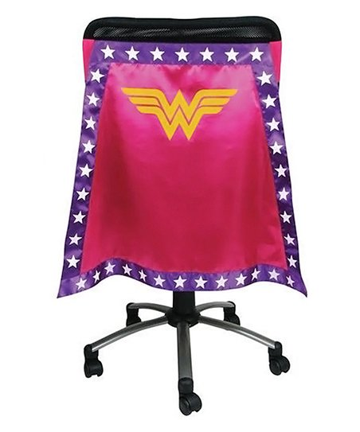

Laborie is a leading company in the Urodynamics industry. Working for a company that deals with mostly urinary products, this can lead to many interesting conversations. They are a global company, with a software team in Mississauga, Ontario, and Enschede, Netherlands. Besides these two software teams, Laborie also develops, creates, and produces all of its own products. They even sell consumables and disposables used during urodynamic procedures. Despite being a huge company, the company atmosphere prevents you from getting lost in a sea of people. The people I worked with were excellent people, whether I was skyping them over the ocean, or defeating them on the ping pong table.
My official job title was an Associate Software Developer, and this acurately describes what I got to do. I was lucky to get plenty of hands on experience developing code. I was doing the same job as the other Software Developers on the team, completing User Stories (in an agile developing environment), fixing bugs, writing unit tests for my code, gathering and refining requirements and continually learning new skills. My favourite part was jumping into a new programming environement, with no experience in the OS (developing on Windows, I use a Mac), no experience in the IDE (Visual Studios), no experience in the languages used (C# with XAML), and no experience in this Scrum developing methodology. The fact I was able to jump in, learn what to do, and complete my assigned tasks (and much more), really helped me improve my confidence in my code.
This opportunity increased my technical abilities immensely, but my soft skills improved much more. I came in as a nervous, quiet student, who was always scared his code was going to fail the test. I remember completing my first bug and how scared I was to even ask someone to look at my solution! I don't think I said a word for the first two weeks of the daily stand-up meetings! By the time my work term was done, I was completing on average of 2 stories per sprint, I resolved half of the teams total closed bugs, I was awarded (the coveted) Caped Coder award for 3 out of the 5 sprints (most of any co-op student) I participated in (Caped Coder is a "Sprint MVP", voted on by the software team. The reward is a superhero cape for your office chair. I chose Wonder Women). I was the most vocal person in the Stand-ups (to the dismay of others), and tried to help others complete their stories when I had any free time. This term has solidified in my mind that I have chosen the right career path to pursue
I also learned about new technologies and got experience to strengthen my current knowledge. Specifically, I dealt with
C# and XAML WPF applications for windows, and am very comfortable creating applications using these now. I also got to expand upon my current SQL knowledge,
helping me expand my full-stack developing experience. I also used the Model-View-ViewModel method of architecture, a method that keeps the UI and the business
loosely coupled, to allow for easy swapping, testing, and refactoring of code. I also found out about many new online resources, the biggest one being PluralSight.
This website offers videos and MANY topics, and was instrumental in helping me learn the new frameworks and languages I needed.
In conclusion I wish this term didn't have to end. I would of loved to work here for another term, but the travel time/cost was too much for me (Guelph -> Mississauga). I met plenty of great people, that were very helpful and taught me things covering a variety of subject areas. Laborie gave me an excellent environement where I felt safe to express myself, and I felt like my opinion was valued. Hopefully my path will cross with them again in the future! I'd like to end this post by recommending their products, as they're an excellent company, but I hope that my readers aren't in a position where they need them.